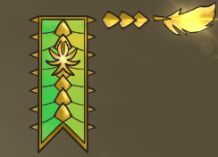
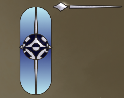
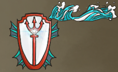
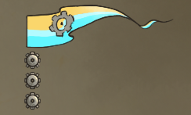
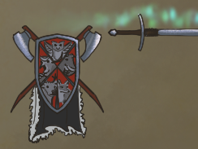
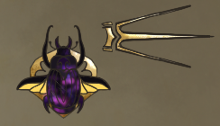
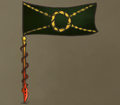
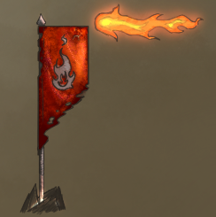

The map with colors pertaining to the nations. [Link]

| Nations | Description | Year of Founding (Modern Year 1017a) |
Lands/Ecology | System of Government | Allies | Enemies | |
|---|---|---|---|---|---|---|---|
 |
Gengalia |
An aristocracy run by the 16 noble houses, each owning a city/town within their borders. They split the capital, Espiron, between 16 city districts. One noble house is The Golden Feathers, their military, the heart of which being Vok'ran Silvertongue. Him and his War Magic command the 8 other schools of magic (Evocation, Conjuration, Illusion, etc...), one master each being in the upper echelon of the organization. They worship gods of the Light, Life, and Grave domains. |
500a |
Forest: A veritable thicket of woodlands spot most of the land, supplying food and shelter to the largest cities in the nation.
|
Aristocracy. Run by the 16 noble families that make up Gengalia, backed by the Golden Feathers, a council of strong wizards. Each member is mastering a particular school of magic. As new avenues of magic are being researched into everyday, the lower members on the board change often. However, it has 9 primary members, including the head honcho Vok’Ran Silvertongue, who is a War Mage and general of the army. |
Neutral to Elostia |
N/a |
 |
Empire of Elostia |
A nation that values knowledge above else, shown in the Highsiege Museum and Candleglow Academy, both the nation's largest showcase of the magical arts in artifact and academy respectively. Predominately elven history, but with a deep tie to the cosmos in their religion. The birthplace of the unique race Lostori, messengers from the stars. Still recovering from their loss in the Gengal-Elost war 100 years ago, the nations thankfully share neutral borders. They worship gods of Arcana, Knowledge, and Moon domains. |
120a |
Extreme hills: The northern section of Elostia makes good use of its mountains to serve as a natural blockade. Thankfully, as well, it is on the humid side of the mountains, meaning it gets most of the water from the climate.
|
Two forms of government. There’s the Emperor, and then there’s the Con’Quessir. The Emperor is ‘officially’ the ruler of the land, but that’s for political purposes. The one in charge of the military is the Con’Quessir, which is Elvish for King. |
Neutral to both Gengalia and Cresthaven |
N/a |
 |
Crown of Allsoria |
One a monarcy ruled by King Ymir Bunodath, the throne was repaired thanks to the help of a ragtag group of adventurers 20 years back, now ruled by his son King Khivis, heir to the throne. Allsoria is currently prospering thanks to their thriving economy. Leading the charge into a more technologically advanced world thanks to the gnomish engineering from their alliance with Pabbler, a far-cry from their viking heritage. They maintain good relations with their homeland, Cresthaven, as well as their old traditions. Land of Giants and Celestials. They worship gods of Forge, War, and Tempest. |
70a |
Arctic: Glaciers and snowtopped icescape, these unhopsitable areas are only home to giants and creatures who can bear the cold. Hence so, many of the foundations are named after those of giants.
|
Allies |
Allied to both Pabbler and Cresthaven |
N/a |
 |
Pabbler Archipeligo |
These collection of islands don't dip their toe all too much into the continent's politics, but when they do it's usually in search of trade of resources for their growing industry. Cear City, the trailblazer of Arcanomancy and refuge for the failed war's Warforged, sees itself spreading its influence more and more across the lands. This has caused some strife from the islands of Waldren because of their intense ties to heritage and homeland, but what could be done in the search of progress? New prospects is also being seen in Umberlee's Reach, where the guild is making machines indistinguishable from humans. |
900a |
Coastal: It being an archipeligo and all, these collection of islands and coves make up the brunt of the climate.
|
Most of the trading guilds, crafters, merchantile ships, and factions that call these isles home are independent, but anything can happen with the right amount of coin. |
Neutral to The Badlands |
Enemies to Waldren |
 |
Cresthaven |
From the snowtopped mountains to the glaciers where many a hunter cabin make home, the frozen fjords of Cresthaven share a time-honored culture with a strong people. With belief in the five spirit gods, Mal'dor (Mammoth), Orelia (Owlbear), Wendyr (Tree Guardian), Hontrahf (Elk), and Feryn (Fox), they are what is left of the nomadic people who didn't sail West, instead making what was once inhabitable lands, a thriving community. Nordal in particular, is protected by a barrier of warmth, making cultivation and trade possible. |
~500c |
HARSH environment of cold tundra, glaciers, volcanic activity, and snow covering wide landscapes. The only way to survive for long is to work together as a village and sometimes to make trips southward to gather lumber. |
There’s a council that solves disputes with an Allfather, a “judge” who has memorized the entirety of the law and rules of court. Most decisions that need to be made is with a vote from the entire tribe. |
Neutral to Elostia |
N/a |
 |
The Badlands |
The Badlands, once being named to the desert separating Gengalia and Elostia, have now been spread apart across the lower sea. Incredibly dense city-states, these trading hubs are open to people of all types, no matter how colorful the background. Rivaling the purse of much larger nations, the collection of 'Badlands' are a stalwart and loyal ally who have a soft spot for locations with a unique cultural heritage, hence their allies. Because of their links to the world's trade, both open and underground, all are reluctant to step on the toes of the Purple Scarab. Home to the mystery island Ralxire, which appeared out of nowhere not that long ago. |
??? |
Desert: Hot, hot days and cold nights. The only weather in sight are the occasional dust storms and warm winds. However, rarely, the desert floods with mud with a typhoon.
|
Anarchy with a touch of salt. It’s an untamed land with a vast amount of uncontrolled areas plopped in the middle of the continent. Only a few cities within the trade paths have some semblance of control by control of the Scarabs. |
Allied to Waldren and Oulterban |
Technichally, this nation allies with enemies to Pabbler, but still considers their relationship neutral |
 |
Waldren Islands |
These collection of islands are popular destinations and getaways because of their always sunny climate and humid rainforests, showcasing the most beautiful coasts on the continent. Once a reclusive people who preferred their solitude now recently opened their borders more and more, starting with their neighboring nation of Gengalia. Many native tribes on these islands protect the forests fiercely and are aggressive to any outsider unknown to them. On the island east of Sopo, there is said to be a Fey Crossing, a portal to another world, but any more information is a closely guarded secret only the locals are privy to. |
200a |
Jadenseeld: Trading hub/city; After the large immigration of people from the war, it became a cultural churning pot of different people and ideologies that all ended up Waldren-esque.
|
The islands focus on an island-to-island form of ruling. Each island has their own small government, Jadenseeld being the most powerful and populated. |
Allied to The Badlands and Gengalia |
Enemies to Pabbler |
 |
Oulterban "The Shadowlands" |
In the Shadowlands, signs of an ancient civilization. Some keeps and buildings still remain, along with a lone standing tower, surrounded by a graveyard of old and new inhabitants. Home to a newer kingdom of Orcs in Urdard since a little more than 100 years prior, and a collection of Elemental-born in Ezdrad Okh before that, these lands have once been home to the oldest known civilization in the land dating to the old age almost 1000 years ago. |
0a |
Far West: A mix of grasslands and muddy battlefields, still littered with long decayed corpses in rusted armor, torn war machines, tattered banners, and scavenging beasts. These skirmishes were fought long, long ago; Signs of an ancient civilization. Some keeps and buildings still remain, along with a lone standing tower, surrounded by a graveyard of old and new inhabitants.
|
The various villages make trade to one another here or there, but it is dangerous to wander these lands in large groups otherwise it might be noticed by the rather large, dangerous monsters that call these wastes home. An Orc by the name of Nuzel has crowned himself the "Shadowruler," as he regularly sends out hunting parties to offer protection to the locals. |
Neutral to the following: Gengalia, Elostia, Allsoria |
N/a |
The map with colors pertaining to the nations. [Link]